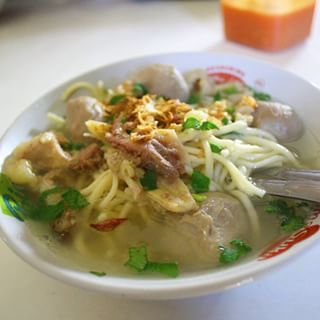

Bakso babat pak tomo adalah bakso favorit warga salatiga dengan harga yang terjangkau hanya 10K saja. Di dalam bakso ini tidak terdapat mie dan bakso saja tetapi terdapat juga babat dan iso. Lokasi Bakso Pak Tomo ini adalah di Jl. klaseman daerah palang salatiga.
